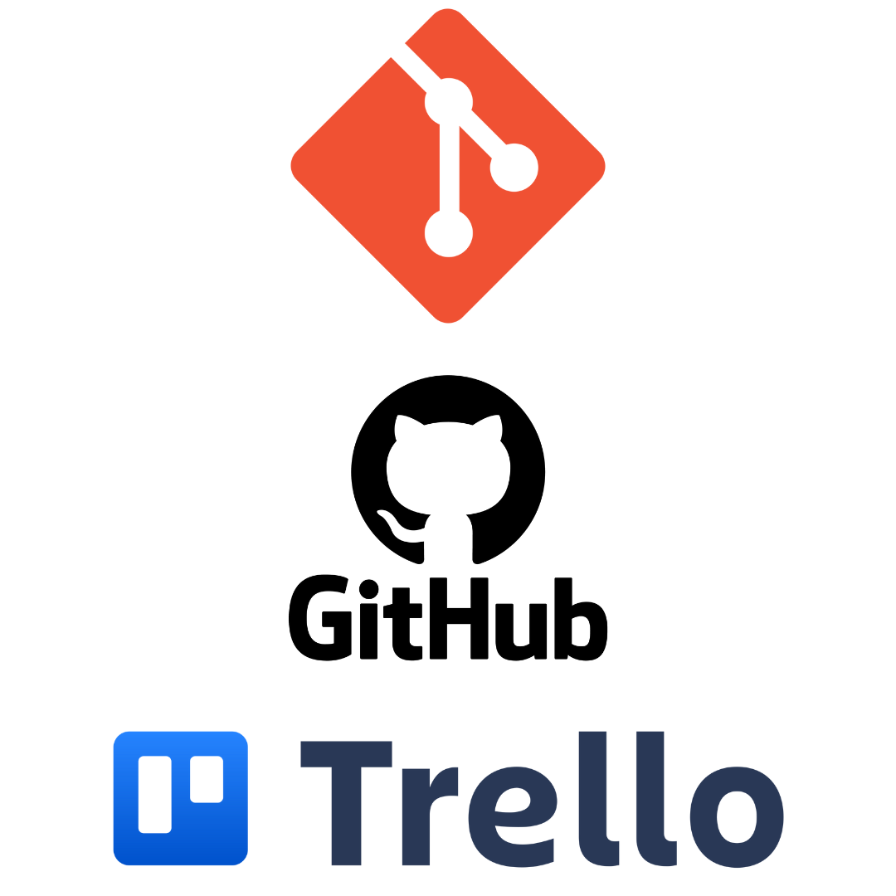
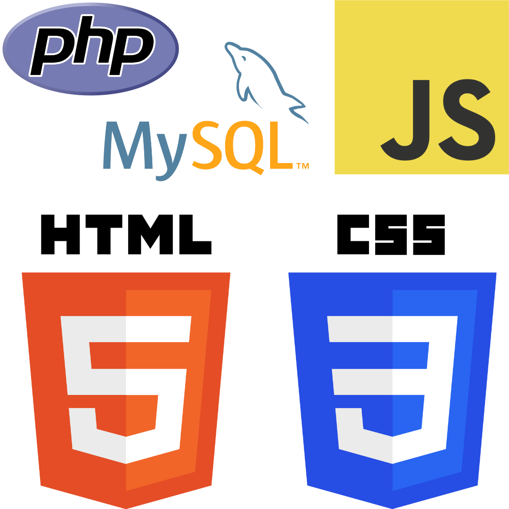
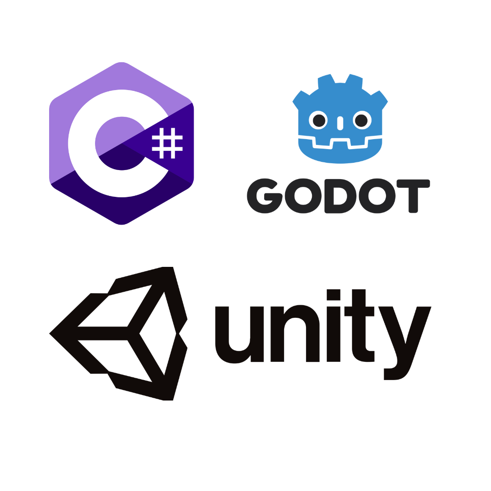
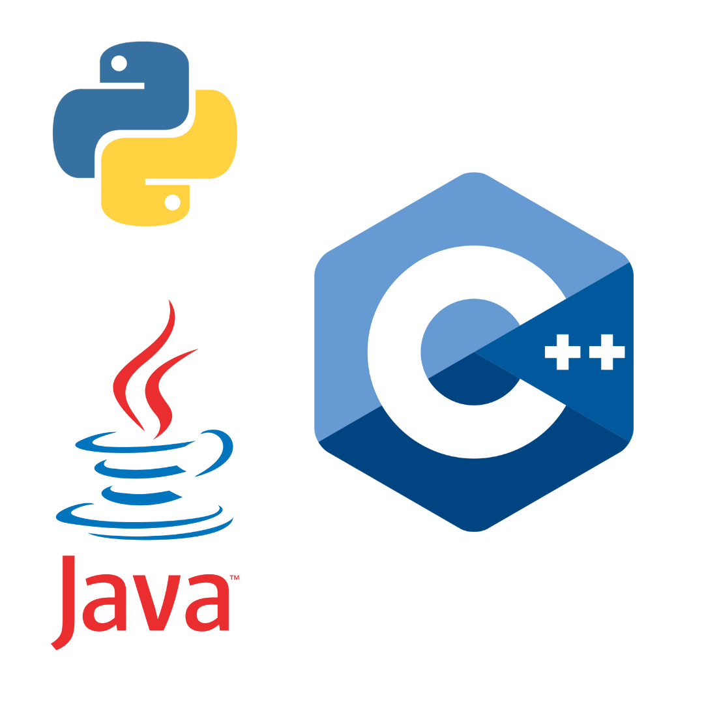
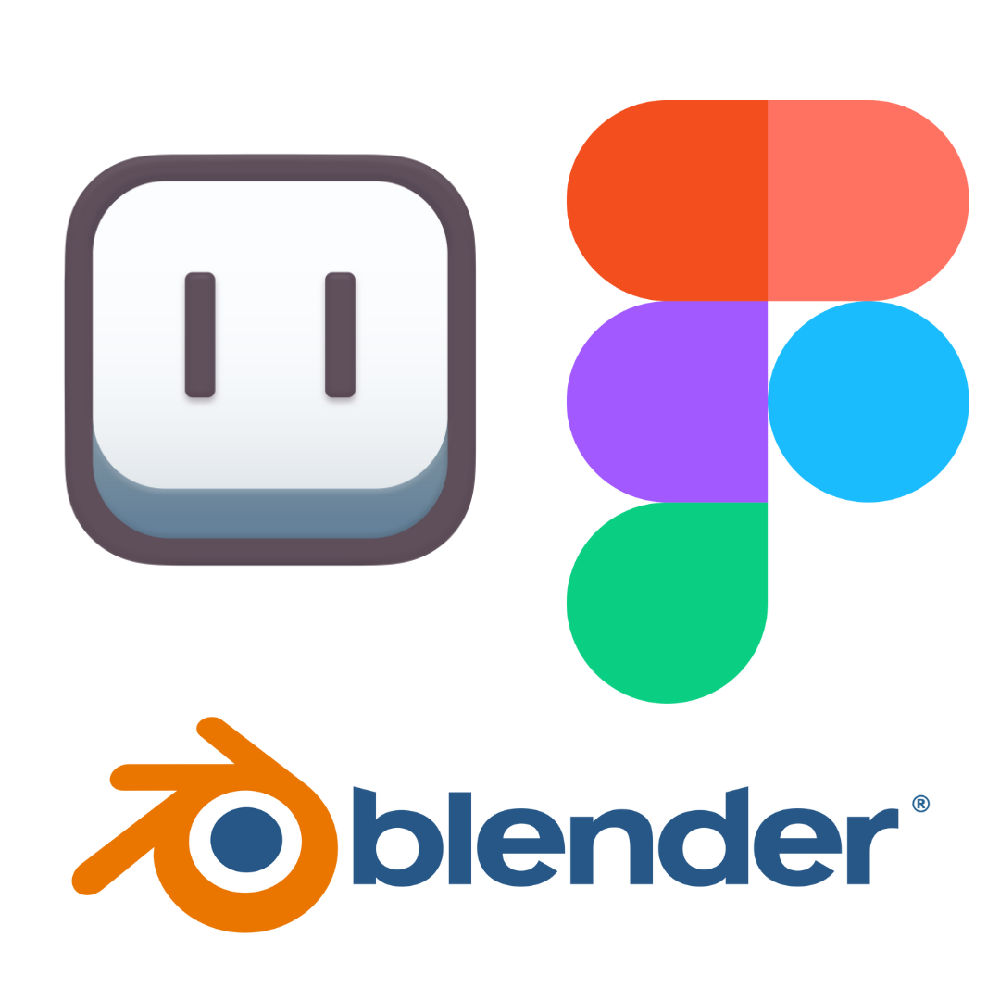

Dans cette section, je vous présente les compétences que j'ai acquises au fil de ma formation et de mes projets personnels. Au fil de mes projets, j'ai pu acquérir différentes compétences dans plusieurs domaines. J’ai touché au développement web, au développement d’applications et au jeu vidéo, tout en explorant un peu le design.
J’utilise Git pour gérer le versionnement de mes projets. Grâce à GitHub, je peux travailler en équipe, suivre les modifications et garder un historique clair du code. J’ai appris à gérer des branches, faire des pull requests et résoudre des conflits.
J’ai utilisé Trello pour organiser mes tâches et suivre l’avancement d’un projet. J’ai découvert l’intérêt des tableaux, listes et cartes pour structurer un projet et mieux répartir le travail.


Je sais structurer une page avec HTML et l’habiller avec CSS. J’ai utilisé des flexbox et des grids pour organiser les éléments, et j’ai travaillé sur la mise en page responsive pour adapter un site aux différentes tailles d’écran.
J’ai appris les bases de JavaScript pour ajouter des interactions à un site, comme des animations, des validations de formulaires ou des modifications dynamiques du DOM.
J’ai utilisé PHP pour rendre des sites dynamiques en gérant les requêtes et l’affichage de données. Avec MySQL, j’ai appris à structurer et manipuler des bases de données, en réalisant des opérations comme l’insertion et la récupération d’informations.
J’ai utilisé Unity pour expérimenter avec le développement de jeux en 3D et en 2D. J’ai appris à créer des scripts en C# pour gérer des mécaniques comme le mouvement d’un personnage, les collisions ou les interactions avec l’environnement.


J’ai découvert Java à travers des exercices et des petits projets. J’ai manipulé les classes, les objets et quelques concepts de la programmation orientée objet.
J’ai utilisé C++ pour comprendre la gestion de la mémoire et les bases du langage. J’ai écrit des programmes simples en console et appris à structurer mon code avec des fichiers header et source.
J’ai utilisé Python pour écrire des scripts et automatiser certaines tâches. J’ai manipulé des listes, des dictionnaires et testé des bibliothèques pour des projets simples.
J’ai expérimenté Blender pour modéliser des objets 3D simples. J’ai appris à manipuler les outils de base comme l’extrusion, le sculpting et les shaders.
J’ai utilisé Aseprite pour réaliser des sprites en pixel art. J’ai exploré les outils de calques, d’animation et de palette de couleurs pour créer des assets adaptés aux jeux en 2D.
J’ai utilisé des outils comme Figma pour concevoir des maquettes de sites avant de passer à l’intégration. J’ai travaillé sur la disposition des éléments et les couleurs pour obtenir un rendu clair et fonctionnel.
